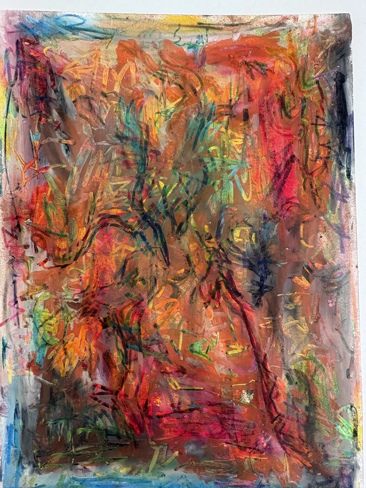
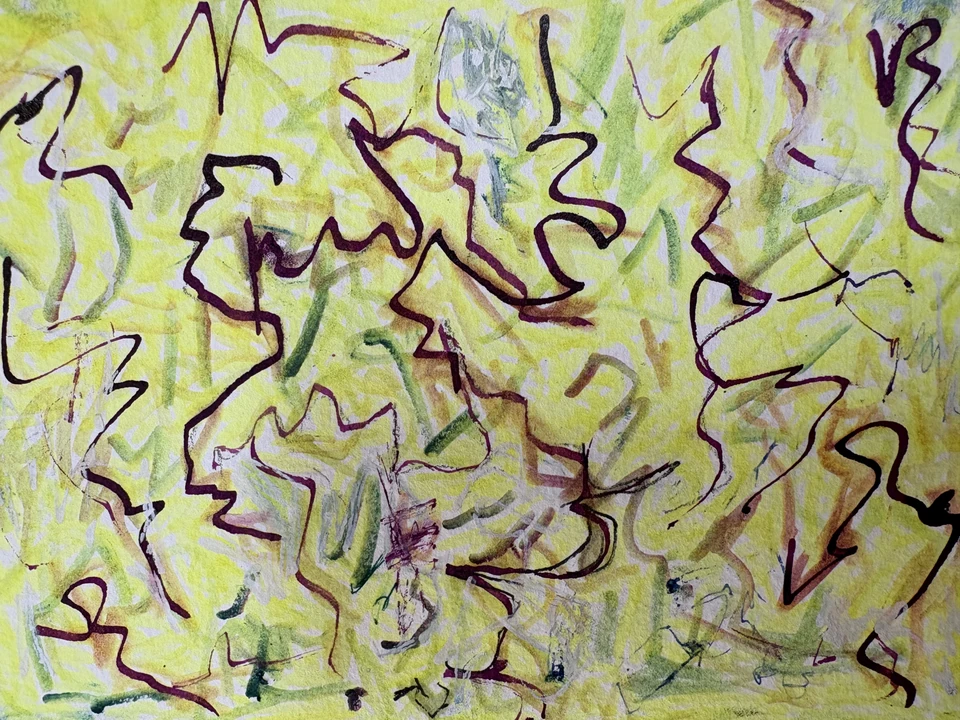
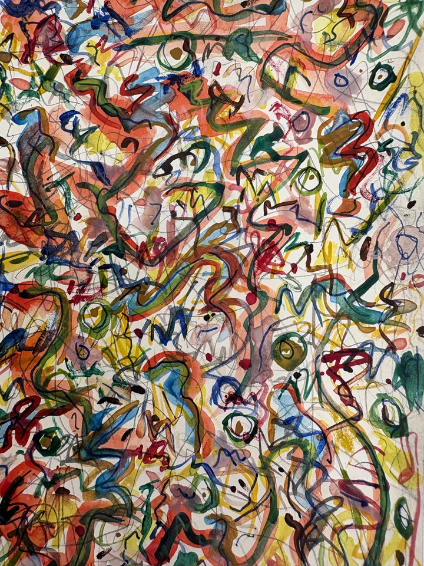
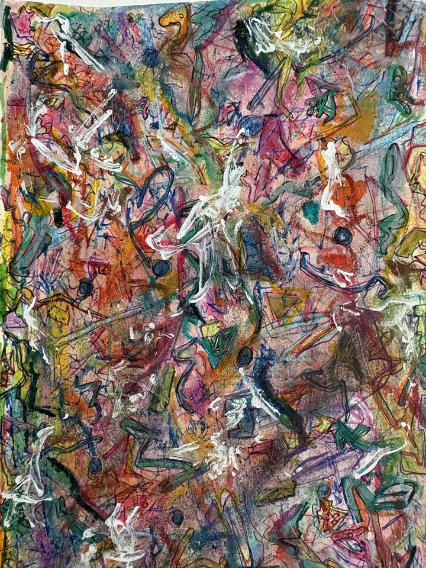
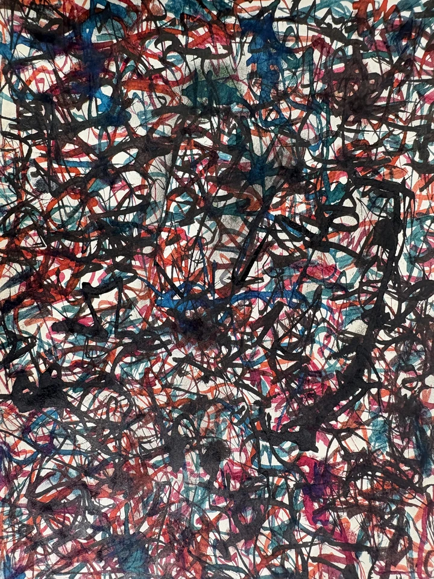

CF—WP—001 / 2025
Works on Paper
A surface that remembers its earlier marks.
Five works on paper, moving from a warm layered surface through open yellow passages, looping colored lines, and white gestures to a dense dark network. Paper texture and overlapping marks remain visible. Captions are descriptive labels rather than formal artwork titles.









